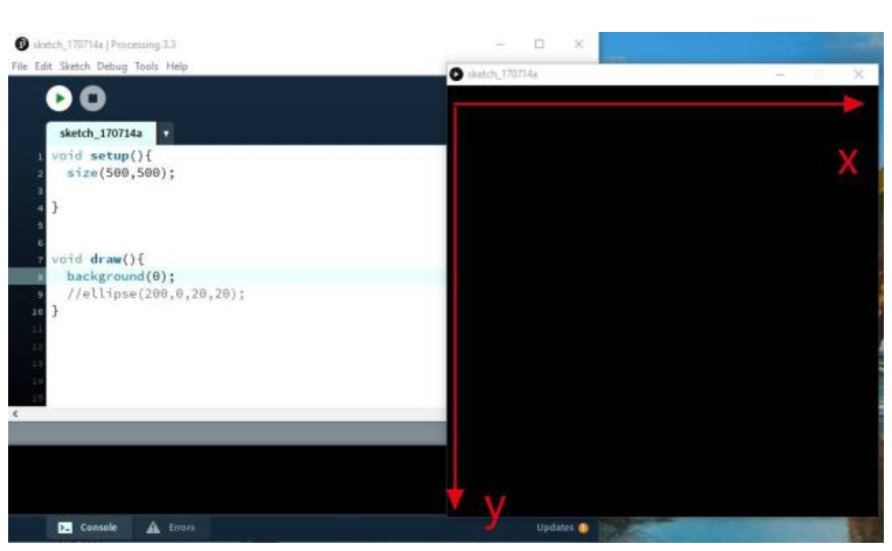

Processing is a programming language created specifically for interaction design, which is relatively easy to use and is more suitable for non-software engineering and computer language students. Processing is a revolutionary and forward-looking emerging computer language. It is an extension of Java language and supports many existing Java language architectures, but it is more simple in syntax and has many intimate and humanized designs. Processing is an open source programming language with integrated development environment, which is used as the programming basis in the field of electronic art and visual design, and is applied to a large number of new media and interactive art works.
a. Menu bar:located at the top of the window, it contains commonly used function buttons, such as documents, sketches, etc.
b. Code area:This is the main area of coding where users can write and edit Processing code.
c. Output area:located below or next to the editing area, it is used to display the output information of the program, suchas the result of printed statements, error information and debugging information.
d. Mode selection:Processing provides two modes: Java mode and JavaScript mode. Java pattern is used for traditional desktopapplication development, while JavaScript pattern is used for Web development. Users can switch modes in the toolbar or menu.
a. Start:Start running the program
b. Stop:Stop running the program
a. New:Clicking will create a new window with a new, empty editing area where you can start writing new code.
b. Sample programs:Usually contains a number of preset sample programs that demonstrate various programming concepts and techniques. Users can select these sample programs to learn and understand how Processing works.
c. Preferences:Preferences allow users to configure various parameters of the Processing IDE according to their preferences and needs.
The main one is the preference. You can adjust the editor font size and the console font size to the most appropriate uppercase, so that the code is more comfortable to type. At the same time, the following two items must be changed, one is suggest import statements, which can be very convenient to quickly reference the functions or parameters that have been typed in the future. The other is to increase the maximum memory, of course, the higher the better
The Run button is used to execute the currently selected sketch, the Adjust button allows the user to modify the Settings or parameters of the sketch, and the Stop button is used to stop the running sketch. These buttons are usually located in the toolbar of the sketchbook application.
The cross-section of processing software has two main functions:
The first one is void setup: all programs written in it will only run once.
The second is void draw: all reasonable programs run once a frame.
The x and y axes in processing are shown below
The code writing process of processing mainly consists of two parts,setup() and draw(), which are equivalent to Start() and Update(). setup is used to set the properties of the program, such as the size of the canvas, background color, images to import, fonts, etc. draw is used to loop drawing instructions, such as points, lines, circles, pictures, and so on. Code is case sensitive, all statements with semicolon ";" Ending.
1.Types of variables：
2.System variables：
3. input function input()
Used to get a line of text that the user entered from the console. The function pauses program execution until the user enters some text and presses the enter key.
4. Output function print()
Used to print any type of data. It can print strings, integers, floating-point numbers, etc., and can print multiple items consecutively.
5. Loop statements :for,while,do while
Loop to execute blocks of code repeatedly.
6. Conditional statements :if, else if, else
Statements can be combined to execute code based on multiple conditions
The interaction of our processing project is to control the movement of small squares up, down, left and right according to the keyboard.
float x=100;
float y=100;
void setup(){
size(480,480);
frameRate(60);
}
void draw(){
background(200,200,200);
rect(x,y,30,30);
if(keyPressed && key==CODED){
if(keyCode==UP){
y=y-20;
}else if(keyCode==LEFT){
x=x-20;
}else if(keyCode==RIGHT){
x=x+20;
}else if(keyCode==DOWN){
y=y+20;
}
}
}
Project information: Sound control box brightness.
Detailed introduction：In the process of Processing, the sound sensor first makes a sound, and the small box is turned on and off through the processing program
#include <SoftwareSerial.h> // 如果使用SoftwareSerial进行串口通信
const int soundSensorPin = A0; // 声音传感器连接到A0
const int ledPin = 9; // LED连接到数字9引脚作为示例
SoftwareSerial mySerial(2, 3); // RX, TX 引脚定义，如果使用USB直接连接则不需要这行
void setup() {
pinMode(ledPin, OUTPUT);
Serial.begin(9600); // 或者mySerial.begin(9600) 如果使用SoftwareSerial
}
void loop() {
int soundLevel = analogRead(soundSensorPin);
Serial.println(soundLevel); // 发送声音强度值到串口
delay(100); // 控制发送频率，防止串口阻塞
// 本地控制LED示例（可选，仅用于演示，实际中可能不需要）
if (soundLevel > 493) { // 假设大于某个阈值时开灯
digitalWrite(ledPin, HIGH);
} else {
digitalWrite(ledPin, LOW);
}
}
Processing code
import processing.serial.*;
Serial myPort;
float threshold = 493; // 声音阈值，可根据实际情况调整
void setup() {
size(400, 400);
background(0);
String portName = "/dev/cu.usbserial-2130"; // 根据你的系统更改串口号
myPort = new Serial(this, portName, 9600);
}
void draw() {
if (myPort.available() > 0) {
String soundData = myPort.readStringUntil('\n');
if (soundData != null) {
int soundLevel = PApplet.parseInt(soundData.trim());
println("Received sound level: " + soundLevel);
// 假设我们在这里仅做显示处理，实际上Processing不能直接控制硬件
// 但你可以根据此值模拟灯泡的开关或调整屏幕亮度
if (soundLevel > threshold) {
fill(255, 0, 0); // 红色表示灯亮
} else {
fill(0); // 黑色表示灯灭
}
rect(50, 50, 100, 100); // 画一个矩形模拟灯的状态
}
}
}
Project information: The mouse controls the light on and off.
Detailed introduction： In processing, the mouse is moved first. If the mouse is moved to the left, the arduino control light is off. If the mouse is moved to the right, the light is on
import processing.serial.*;
Serial myPort;
void setup() {
size(200, 200);
String portName = "/dev/cu.usbserial-2130"; // 根据你的系统更改串口号
myPort = new Serial(this, portName, 9600); // 初始化串口通信
}
void draw() {
// 此处仅为示例，实际可以根据需要在特定条件下发送命令
if (mousePressed) { // 当鼠标被按下时，发送控制命令
if (mouseX < width/2) {
myPort.write('0'); // 发送关闭LED的命令
println("LED Off");
} else {
myPort.write('1'); // 发送打开LED的命令
println("LED On");
}
}
}
int ledPin = 9; // 定义连接LED的数字引脚
const int ledOnCommand = '1'; // 设定LED打开的命令字符
const int ledOffCommand = '0'; // 设定LED关闭的命令字符
void setup() {
pinMode(ledPin, OUTPUT); // 设置LED引脚为输出模式
Serial.begin(9600); // 初始化串口通信，波特率设置为9600
}
void loop() {
if (Serial.available() > 0) { // 检查是否有串口数据可用
char command = Serial.read(); // 读取串口数据的首个字节
if (command == ledOnCommand) {
digitalWrite(9, HIGH); // 收到打开命令，点亮LED
} else if (command == ledOffCommand) {
digitalWrite(9, LOW); // 收到关闭命令，熄灭LED
}
}
}